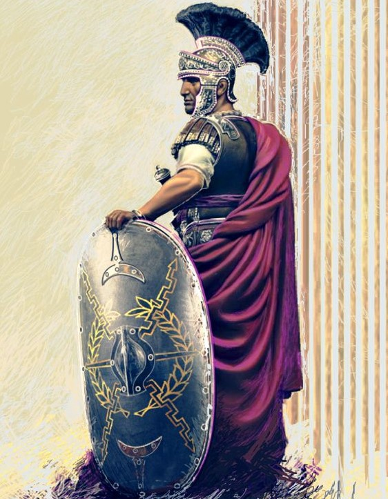

Novosti
Legionar
Legionar je pripadnik vojne ili paravojne formacije koju označava kao legiju . U užem smislu, riječ je o profesionalnom ratniku rimske vojske.Više...

Centurion
Centurion (od lat. centurio) je bio zapovjednik jedne centurije u Rimskoj vojsci. Više...
Equites
Equites je bio naziv za konjicu u vrijeme Antičkog Rima. Više...

Pretorijancian
Pretorijanci ili pretorijanska garda (lat. praetoriani, cohors praetoria), naziv je za posebnu komponentu rimske vojske. Više...
Legatus ili general
Legati su, u doba kasne republike, bili senatori, koji su služili pod vojnim zapovjednicima, i na čiju su preporuku bili imenovani od Senata. Više...